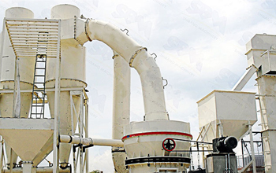

Vertical roller mill is currently the most advanced technology can replace traditional cement mill, pipe mill, a new generation of grinding equipment, raw materials for cement limestone, gypsum, silica, coal crushing grinding higher efficiency and lower energy consumption. Cement raw vertical roller mill design has been completed, the design of milling yield 500-530 tons per hour, the maximum feed size up to 15 cm, the maximum feed water up to 8%, installed power of 4600 kilowatts, whether production or installed power is the largest.
In the industrial production of cement, cement raw meal by calcareous materials, clayey raw materials and other calibration materials, in proportion to the mix with the grinding fineness of certain materials, and preparation of raw material grinding system power consumption accounts for cement production complex fourth power consumption, energy saving cement manufacturing enterprises focus. The cement plant vertical roller mill for raw water big wet materials have good adaptability, the entire grinding system process is simple, stand-alone production, feed size, low power consumption, high efficiency, etc. in line with the national cement industry energy saving industrial policy.
Vertical roller mill system parameter calculation process, the host computing device operating parameters, the system configuration process, product design and manufacturing, hydraulic technology, automatic control technology, can develop the design and manufacture of mechanical, electrical, hydraulic, and including the main gear, including a complete package large vertical roller mill. Through years of practice, has established a perfect vertical roller mill manufacture, assembly, testing standards and specifications, and is in line with international advanced standards recognized by users around the world.
In recent years through technological innovation, the company in terms of smelting, casting and forging, heat treatment, welding, machining including gear including machining have reached the international advanced level, with the manufacture of large high-quality raw material vertical roller mill cement plant in good condition.
Cement raw vertical roller mill, SANDMAKER Machinery is original equipment on the basis of improved product. Compared to industry professionals cement raw vertical roller mill manufacturer pay more attention to the condition of materials, so this new cement plant raw vertical roller mill stand can be adjusted according to the hardness of their capacity of materials, automatic adjustment of the grinding roller and grinding ring the distance between. The entire device is more intelligent, greater capacity, higher efficiency, the material is more perfect, more environmentally friendly, as of the date of the end of the test run, the device is not any abnormal conditions and failure problems, low noise running smoothly, reaching the National Clean Energy Saving production of the highest standards.
Live chat with our professional customer service! Get the quotation list.
Chat Now